Мини-печь W551
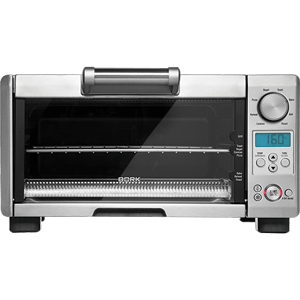Интеллектуальная система распределения мощности – IQ SYSTEM
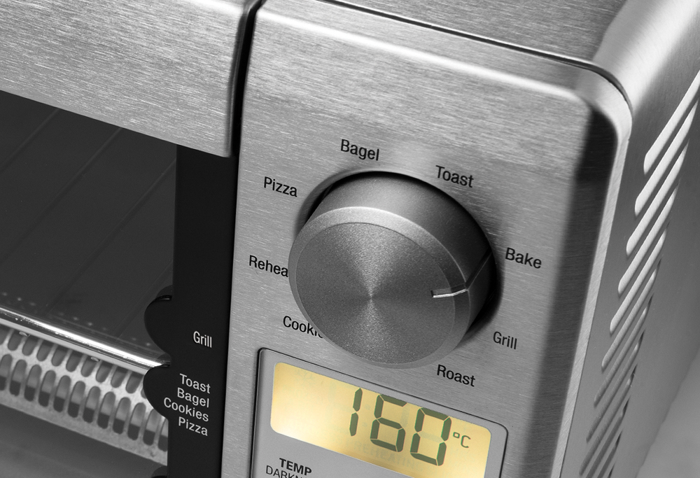Интеллектуальная система распределения мощности – IQ System обеспечивает оптимальный результат приготовления, благодаря возможности комбинированного включения отдельно взятых нагревательных элементов. Таким образом, температура регулируется с учетом особенностей приготовления каждого продукта.
Гриль
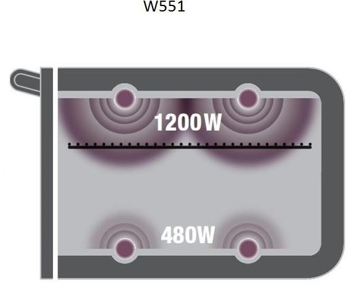Высокая температура сверху и низкая температура снизу – клеровка и подрумянивание
Тосты
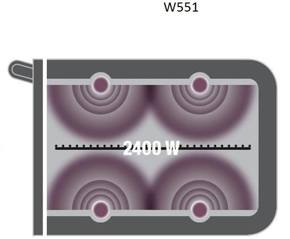Подсушивание сверху и снизу – подсушивание и хрустящая корочка.
Выпекание
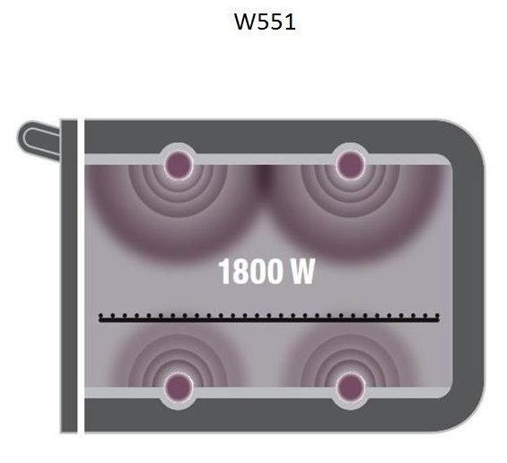Равномерная температура: оптимальное пропекание.
Широкий спектр возможностей
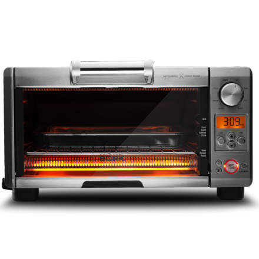Мини-печь оснащена разнообразными режимами приготовления, такими как гриль, выпекание, обжарка, разогрев, что ставит ее в один ряд с многофункциональными микроволновыми печами и духовками.
Электронное управление
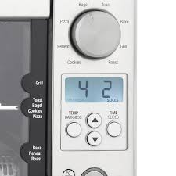Электронное управление мини-печи просто и удобно. На информативном дисплее отображаются все необходимые данные о заданном режиме: программа, температура и время приготовления.
Программы автоматического приготовления
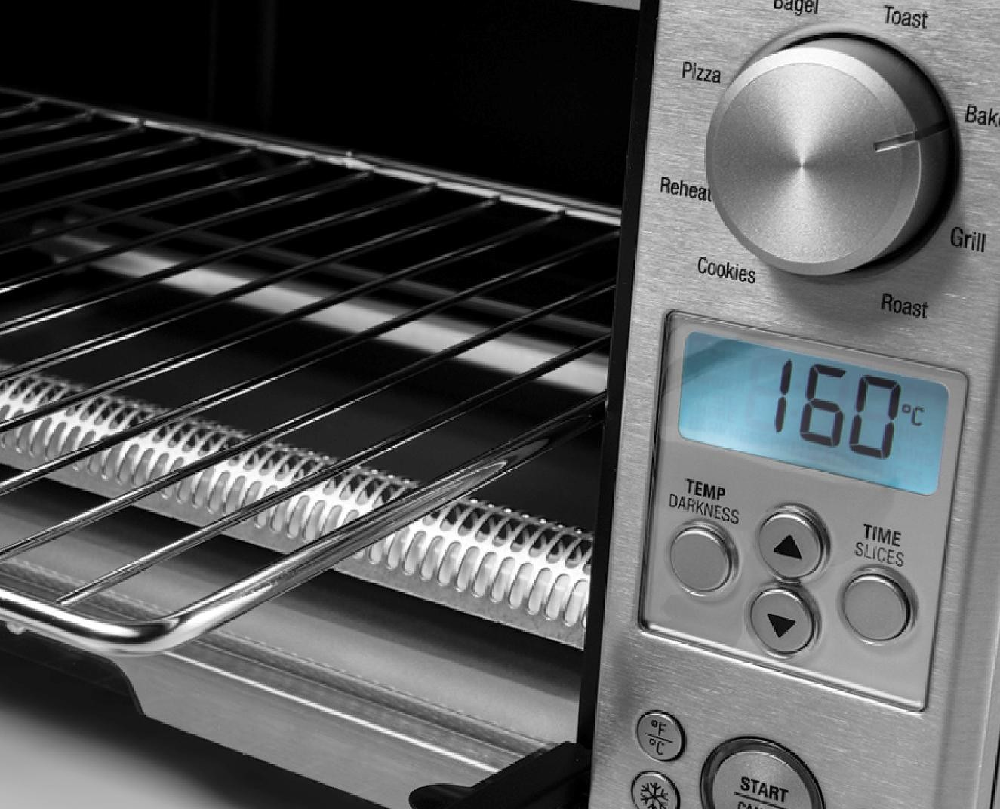Предустановленные программы позволяют приготовить широкий спектр блюд, например, тосты с хрустящей корочкой, необычайно вкусное печенье
или отличную пиццу. Настройки программ можно изменять вручную, они запоминаются и отобразятся при следующем включении прибора.
Кварцевые нагревательные элементы
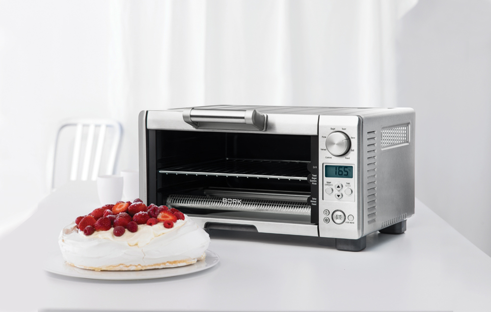Мини-печь оснащена кварцевыми нагревательными элементами, которые могут работать как по отдельности, так и в комбинации в зависимости от выбранного режима. Благодаря этой особенности, настройки максимально точны и легко адаптируются под определенный вид продуктов.
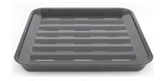 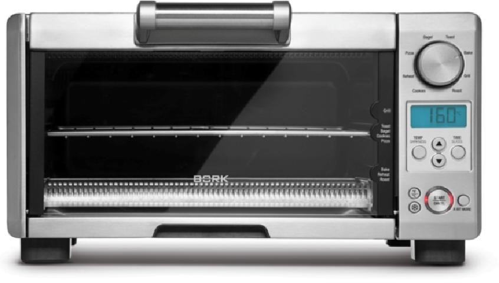Комплектация
Мини-печь : 1
Противень для выпекания (26 см): 1
Решетка: 1
Съемный поддон для крошек: 1
Руководство по эксплуатации с гарантийным талоном: 1
Технические характеристики
Напряжение: 220–240 В / ~50 Гц
Мощность: 2000–2400 Вт
4 нагревательных элемента
8 автоматических программ
Размер противней: 26 см
Объем: 12 л
Габариты (ДхШхВ): 40x30x22 см
Вес: 6 кг
Страна изготовитель: Китай